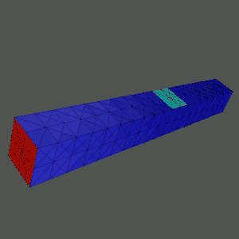
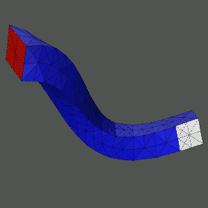

MC Gallery
Here is an example of
MC
applied to a large deformation nonlinear elasticity problem.
The red face at the left end of the (steel) bar is fixed to a wall,
and traction forces are applied to the light blue and white patches of
the surface of the bar to give the bar a ``twist''.
This is sort of like hitting the bar with two hammers at the same time,
in not quite opposite directions.
After building a finite element approximating system using simplex-based
elements, MC solves the nonlinear algebraic system using a damped inexact
Newton method, with some help from continuation (simple natural parameter
in the forces).
MC solves the linear systems at each Newton iteration with an
unstructured algebraic multilevel method.


Below are some images generated by MC for a range of problems.
- Applications of MC to problems arising in relativity physics
can be found here.
- Applications of MC to problems arising in biochemistry
can be found here.
- Applications of MC to problems arising in geometry
can be found here.
- A comparison of MC's recursive inertial bisection
and spectral bisection
can be found here.
- Miscellaneous MC-generated images
can be found here.